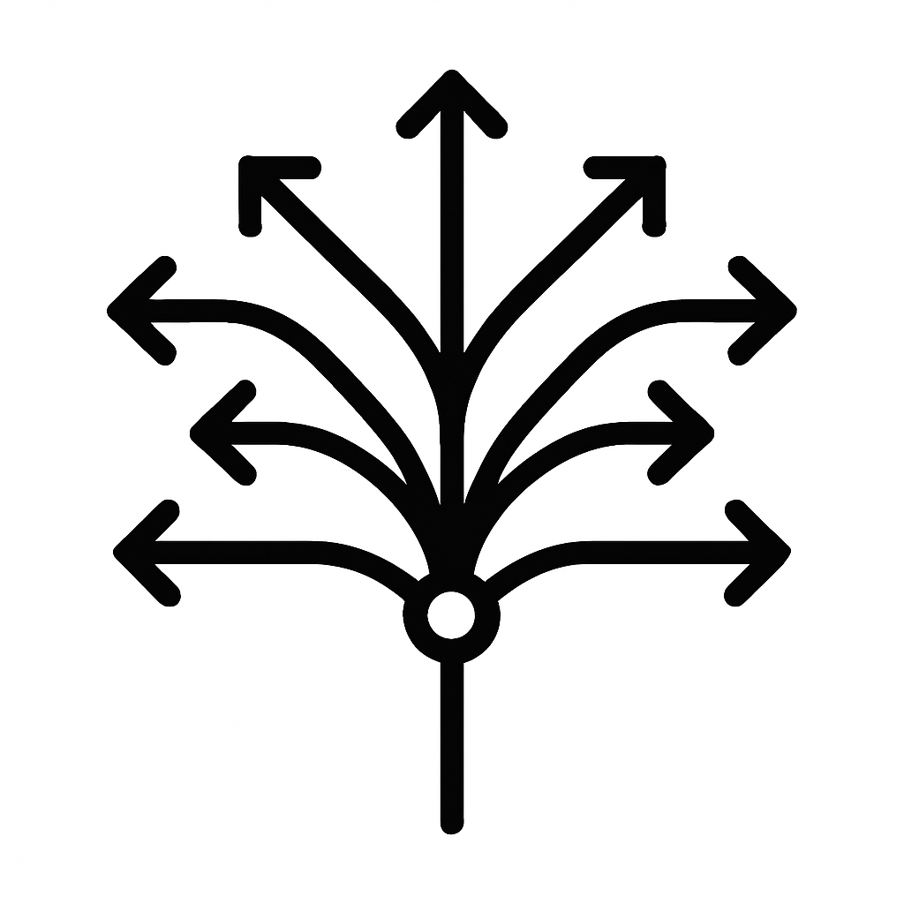

This project is supported by a UKRI Metascience Research Grant.
If you would like to sign up to participate as an analyst in the many-teams component of the project, please fill out this form.

Quantitative impact evaluations – studies which measure the effects of policy – play a central role in government decision-making. In the UK, government departments conduct and commission hundreds of evaluations each year, and impact evaluations are highly integrated into the policymaking process, with many billions of pounds of public funds resting on the results of such studies.
It is therefore concerning that, as indicated by recent metascience research, the results of many quantitative analyses in academia appear to be very sensitive to analysis decisions made by researchers. A researcher conducting a quantitative analysis must make a vast array of decisions, such as which data to use, how to measure outcomes, which model to estimate, and so on. As a result, when different academic research teams test the same hypotheses, using the same datasets, they often produce very different results.
The potential consequences of this problem for impact evaluations of government policy are profound, as it implies that policymakers cannot be sure that the information taken from any single analysis is correct. However, while this issue has been documented in several academic disciplines, work examining whether the problem of analysis-dependent results affects quantitative evaluations of government interventions is rare. In the absence of studies which assess the scale of this problem for policy-relevant research, policymakers cannot know whether the impact evaluations upon which they base key spending decisions are robust.
We address this issue by uniting a team of academics with expertise in quantitative impact evaluation methods and UK civil servants who have responsibility for improving the quality of evaluation practice in government. We aim to quantify the degree to which the results of impact evaluations vary when researchers use different, but defensible, analysis choices. Our research is divided in three parts. First, we will employ a "many-teams" analysis, in which we will recruit a large number of independent research teams to reanalyse data from existing impact evaluations. Second, we will use a survey-based analysis to solicit analysis choices relevant to existing evaluations from a larger set of independent researchers. Third, we will conduct a “multiverse” analysis to simulate the full universe of possible analysis choices for a given evaluation and investigate how these choices affect estimates of policy impact.
Our project will generate significant new evidence on the robustness of quantitative research findings which we will use to directly inform evaluation practice across government. Our research will reveal whether government evaluations, like academic studies, are analysis-dependent, and what the range of possible estimates of policy impact is. We will also investigate whether analysis-dependence is ameliorated by using different research designs, an important factor ignored in previous literature. Together, this research will substantially increase the available evidence on the integrity and rigour of existing quantitative research findings.
This research will also enable us to provide tangible recommendations for evaluators in government and the broader evaluation community. We will translate our findings into guidance on how to mitigate analysis-dependence, which will be incorporated into the Magenta Book, the key resource for evaluators across UK government. This guidance will therefore directly contribute to the integrity of research findings used to inform policy and spending decisions.